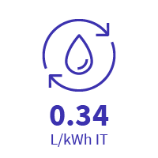

Gérer notre impact environnemental
Aujourd’hui, le numérique occupe une place centrale et grandissante dans notre vie professionnelle et personnelle. La croissance du cloud est donc en constante accélération pour accompagner la numérisation de toutes nos activités. Conformément à nos valeurs et à notre ADN, nous nous positionnons à la pointe de l’innovation durable. Nous voulons contribuer à la transformation globale du secteur avec des pratiques et des usages plus pérennes. Le but étant en effet de minimiser de manière consciente l’impact lié au fonctionnement de nos datacenters et à l’utilisation de nos serveurs.
Notre transparence
Texte
Durabilité & chaîne d'approvisionnement
Texte
Nos indicateurs environnementaux (2025)

Marqueur 1
Description du marqueur 1

Marqueur 2
Description du marqueur 2
Marqueur 3
Description du marqueur 3
Marqueur 4
Description du marqueur 4
Marqueur 5
Description du marqueur 5